Lucía de la Cruz, madrileña inquieta con una filosofía de vida: “Lo difícil se consigue lo imposible se intenta”. Diseñadora UX/UI con experiencia en marketing y gestión de equipos. Echa un vistazo a mis proyectos de diseño. ¿Quieres que hablemos?
Experiencia en gestión de equipos, marketing, metodologías Agile, diseño de producto digital. Más de 4 años de experiencia en el sector digital.
Proyectos